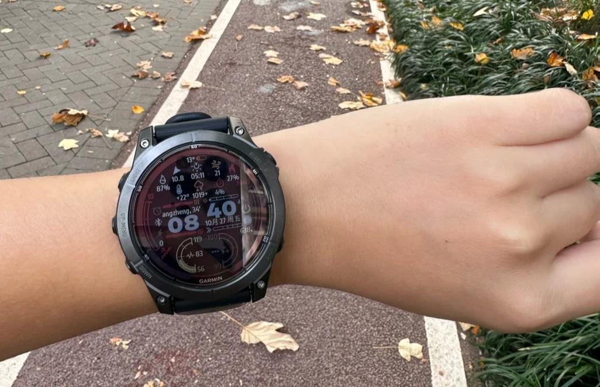

佳明 Fenix 7

户外旗舰全能表，太阳能加持的硬核探险装备。
客观评测
Fenix 7 采用 1.3 英寸半透反射屏，太阳能版本可进一步延长续航。多频多星定位支持 GPS、GLONASS、Galileo 与北斗，实测城市高楼与密林环境搜星均在十秒内完成。内置气压高度计、电子罗舱与血氧传感器，支持登山、越野跑、滑雪、潜水等数十种运动模式。GPS 模式续航约 57 小时，UltraTrac 模式可达上百小时，还内置离线地图与音乐播放。
主观点评
戴上 Fenix 7 的感觉像把一台小型户外电脑绑在腕上，厚重但踏实。越野跑时心率曲线平滑、配速数据可信，长距离赛事中电量焦虑几乎为零。日常佩戴略显硬核，但换来的是随时可以出发进山的底气。它不是给所有人准备的，而是为严肃跑者与户外玩家量身定做的工具，用熟之后很难降级。
优点与不足
- 多频定位在峡谷密林中依然精准
- 续航怪兽，长距离越野赛无压力
- 训练与户外功能几乎无所不包
- 价格高昂，入门门槛高
- 机身偏大偏重，细手腕不友好
- 系统上手复杂，功能多到需要学习
参数规格
| 屏幕 | 1.3 英寸半透反射式 MIP 屏（太阳能版本） |
|---|---|
| 传感器 | 光学心率、血氧、气压高度计、电子罗盘、温度传感器 |
| 定位 | 多频多星 GPS/GLONASS/Galileo/北斗 |
| 防水 | 10ATM（100 米防水） |
| 电池/续航 | 智能模式约 18 天，GPS 模式约 57 小时 |
| 系统 | 佳明自有系统 |
| 兼容性 | iOS / Android |
| 存储 | 32GB，支持离线地图与音乐 |
| 表壳 | 纤维增强聚合物 + 金属后壳 |
| 重量 | 约 73 克 |